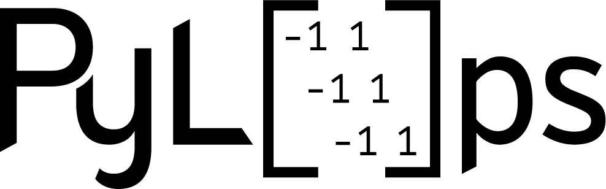
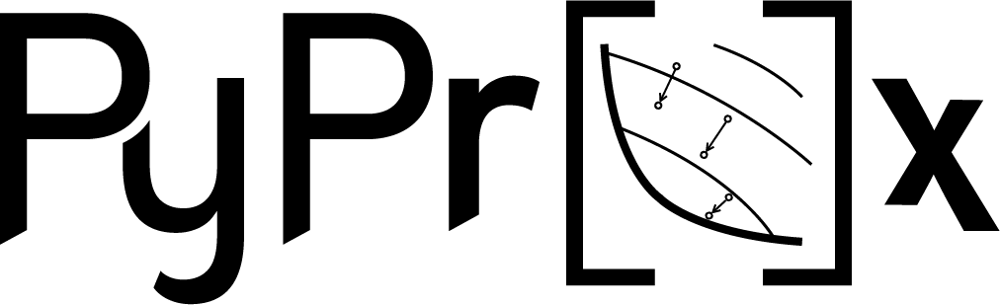

Our Software
Why bother?
A handful of research groups around the world care about scientific software development as much as we do. The trigger of such an interest can be traced back to my previous job (working as a researcher in industry): I noticed that a lot of code was written over and over again to fullfill short term research objectives, which always took precedence over long term goals. Having a solid, shared code basis can instead empower all the members of a team and allow them to focus on new, exciting research questions whilst also contributing to improve the quality and robustness of their shared underlying software.
PyLops, our flagship software package [Ravasi and Vasconcelos [2020]], is a Python based framework for large-scale, matrix-free inverse problems. Built in a modular fashion, it enables both beginners and advanced users to take advantage of its functionalities: the former can use it for educational purposes or to build research prototype codes, the latter can leverage its dual cpu/gpu backend to develop high-performance technologies such as the one that powers the software user for our Gordon Bell Prize 2023 contribution that was shortlisted as one of the 6 finalists. The history of PyLops provides a clear example of what a general-purpose, flexible, and scalable software package can provide in the long run to both its development team and the scientific community at large. Currently, more than 80 research papers have acknowledged the use of PyLops. Apart from those associated with one or more of our core developers (roughly 40%), notable examples can be found in Nightingale et al. [2021] that exploited PyLops’ scalability to invert large astronomical datasets, Muller et al. [2023] that leveraged PyLops in their implementation of acoustic cloning, and Renders et al. [2023] that developed an image warping toolbox on top of PyLops. We believe this to represent just a small fraction of the number of world-wide users of PyLops, and we are aware of the fact that our users are both in academia and industry.
Over the year, additional auxiliary software packages have been built around PyLops, creating what we call nowadays the PyLops ecosystem. A notable example of this is PyProximal [Ravasi et al. [2024]], a Python library for convex optimization. Created originally upon suggestion of one of PyLops' users, PyProximal has grown exponentially in the last few years with contributors coming from all over the world with different scientific background and expertise. Another recent development, which started as part of the 2023 Google Summer of Code, is PyLops-MPI: this software package aims to extend the capabilities some of PyLops' main operators towards distribute computing via MPI (using the MPI4py library), enabling users to scale their PyLops codes beyond a standard single node configuration.
 - A Linear-Operator Library for Python
A Python library aimed at solving large-scale inverse problems in an efficient manner, whilst writing computer code that resembles the underlying mathematica formuation |
 - Proximal Operators and Solvers in Python
A Python library aimed at optimizing convex, non-smooth functionals by means of proximal operators and solvers |
 - Distributed Linear Operators in Python
- Distributed Linear Operators in Python
A lightweight extension of PyLops to distribute operators on HPC systems via MPI. |
PyMarchenko - A bag of Marchenko algorithms implemented on top of PyLops
A Python library collecting most of the Marchenko algorithms available in the literature, all implemented using the same framework and accessible in the same way. |
SPGL1 - Spectral Projected Gradient for L1 minimization
A Python solver for L1 regularized problems. Finds applications in data denoising, compressive sensing, and sparsity promoting inversion in general. |